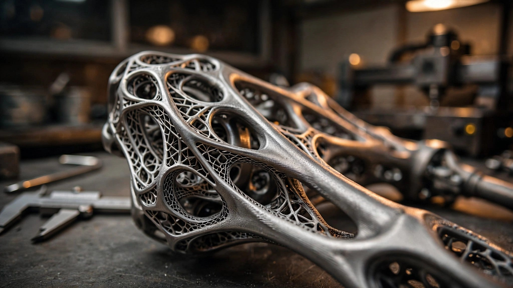

Printed, Not Stamped: How Czinger's Divergent Manufacturing System Builds a 1,250-HP Hypercar from Laser-Fused Metal Powder
Every metal structure in the Czinger 21C begins as a bed of fine alloy powder, shaped by lasers into geometries that no stamp die or casting mold could produce. Its parent company, Divergent Technologies, now supplies the same process to Bugatti and McLaren. At Laguna Seca, the car those powders built holds the outright production car lap record.

Why a Car Company Built a Manufacturing Platform First
Kevin Czinger's path to building hypercars began with a problem that had nothing to do with horsepower. In the early 2010s, he was constructing a car factory in China and realized that tooling and fixturing consumed more capital than all of the technology development combined. Stamp dies for body panels. Casting molds for engine components. Welding jigs for chassis assembly. Each required months of lead time, massive upfront investment, and a commitment to a single design that could not be changed without scrapping the tooling and starting over.
He founded two companies in response. Divergent Technologies would build a manufacturing system that eliminated tooling entirely. Czinger Vehicles would prove that system worked by producing the most demanding product imaginable: a hybrid hypercar capable of competing with Koenigsegg and Bugatti. One company makes the factory. One company makes the car. Both operate from Torrance, California, in a facility called Area 21.
What emerged is the Divergent Adaptive Production System, known by its acronym DAPS. In conventional automotive manufacturing, the sequence runs design, then tooling, then production. DAPS collapses that into design, then print, then assemble. No stamp dies. No casting molds. No welding fixtures. A single hardware installation can produce components for entirely different vehicle models by changing only the software instructions. Divergent claims it can switch between manufacturing programs with zero physical reconfiguration.
Computation Designs What Hands Cannot
DAPS starts not with a sketch but with a set of engineering constraints. An engineer defines the problem: this component must withstand these loads, connect to these interfaces, route coolant through this path, and weigh no more than a specified limit. Divergent's proprietary software then generates a geometry that satisfies every constraint simultaneously, placing material only where stress analysis demands it and removing everything else.
Conventional topology optimization has existed for decades in aerospace. What Divergent does differently is integrate the optimization with manufacturing constraints specific to laser powder bed fusion. A geometry that is structurally optimal but impossible to print helps nobody. DAPS generates shapes that are both load-path efficient and printable in a single build orientation without requiring extensive support structures. It also accounts for assembly, designing parts with integrated alignment features that allow robotic joining without custom fixtures.
Results look nothing like traditional automotive components. Where a stamped steel bracket is flat with bent flanges, a DAPS-generated bracket resembles a trabecular bone structure: a lattice of interconnected struts and surfaces with material concentrated along primary stress paths and voids wherever loads are absent. Kevin Czinger has described the aesthetic as organic. "They look like something from nature because nature competes for material and energy. It has to be efficient." Biology arrived at these shapes through millions of years of selection pressure. Computation arrives at similar shapes in hours.
Twelve Lasers and a Bed of Powder
Divergent's production floor runs Nikon SLM Solutions NXG XII 600 printers, among the largest and fastest laser powder bed fusion machines commercially available. Each unit houses twelve 1-kilowatt fiber lasers operating simultaneously across a 600 × 600 × 600 mm build volume. Divergent claims printing speeds approximately fifteen times faster than standard single-laser or quad-laser industrial systems.
Laser powder bed fusion works by spreading a thin layer of metal powder, typically 30 to 60 microns thick, across a flat build plate. Lasers selectively melt the powder according to a digital slice of the target geometry, fusing it into solid metal. A fresh layer of powder is spread on top, and the process repeats. Layer by layer, a fully dense metal component emerges from what was a bed of fine particles.
Czinger uses three primary alloy families. Aluminum alloys provide high strength-to-weight ratios for structural components like the monocoque and subframes. Titanium alloys, with their superior fatigue resistance and corrosion immunity, go into suspension components where cyclic loading is severe. Inconel, a nickel-chromium superalloy developed for jet engine turbines, handles extreme thermal environments near the exhaust and turbochargers. Selecting the right alloy for each component is not an afterthought; it is embedded in the computational design phase, where material properties inform the optimization algorithm from the start.
A single DAPS-generated component can integrate functions that would require multiple separate parts in conventional manufacturing. Consider the 21C's monocoque. At 265 pounds (120 kg), it is lighter than most performance car subframes alone. But it does not merely provide structural rigidity. Internal channels route coolant through thermosiphon pathways, eliminating the need for separate plumbing hardware. Fluid passages for brake and hydraulic systems are printed directly into the structure. Even acoustic management for exhaust resonance is built into the monocoque's geometry. What would be a dozen parts bolted and welded together becomes a single printed assembly with no joints, no fasteners, and no failure modes at connection points.
Robots That Need No Jigs
After printing, components move to Divergent's assembly cells, which use KUKA industrial robots arranged in what the company calls Automated Units, or AUs. Each AU is a self-contained station of multiple robotic arms working in coordination. One arm holds and rotates the growing assembly while others attach printed components using high-performance structural adhesives developed in-house.
In conventional car manufacturing, a body-in-white assembly line requires hundreds of welding fixtures, each custom-built for one specific vehicle model. Changing from one model to another means replacing those fixtures, a process that can take weeks and cost millions. In an AU, there are no fixtures. Robotic arms position components relative to each other using software-defined coordinates. Switching to a different vehicle model requires only a software update. No physical tooling is swapped. No production line is shut down for retooling.
Divergent claims this approach reduces factory capital expenditure by an order of magnitude compared to a traditional stamping and welding operation. It also decouples production volume from tooling amortization. A conventional automaker spreading the cost of stamp dies across 200,000 units can justify the tooling investment. A boutique manufacturer building 80 units cannot. DAPS makes 80 units economically viable by eliminating the tooling cost entirely.
One Part Where Twelve Used to Be
Perhaps the most vivid example of what additive manufacturing enables in the 21C is the BrakeNode. In a conventional car, the brake assembly consists of distinct parts: a caliper, a steering knuckle (or upright), a wheel bearing housing, and various brackets and mounting hardware. Each is manufactured separately, often by different suppliers, and bolted together at assembly. Every bolted joint introduces a compliance path, a potential source of flex under load that degrades braking precision and steering response.
Czinger's BrakeNode consolidates the brake caliper and knuckle into a single 3D-printed structure. No bolted interfaces between them. No alignment tolerances to manage. No risk of joint fatigue over thousands of thermal and load cycles. Stiffness at the caliper mounting point increases because the load path from pad to upright is continuous metal rather than metal-bolt-metal. Weight drops because the material removed from eliminated flanges, bolt bosses, and extra wall thickness at joints exceeds whatever additional material the integrated design requires.
Czinger has stated that future iterations will extend this principle to all brake hardware on the car, printing every component currently sourced as a separate casting or forging. During MotorTrend's recent test at Chuckwalla Valley Raceway, test driver Evan Jacobs confirmed that the braking hardware showed barely perceptible ABS intervention during hard stops, a sign of high system stiffness and consistent pad-to-disc contact.
An In-House V8 at 11,000 RPM
Most boutique hypercar manufacturers outsource their engines. Pagani uses Mercedes-AMG V12s. Noble sources Ford EcoBoost units. Even Koenigsegg, for all its engineering ambition, developed its own engine only after years of using Ford-derived blocks. Czinger designed and builds its V8 entirely in-house, and its specifications suggest that doing so was not optional but necessary for the car's weight and packaging targets.
At 2.88 liters of displacement with a flat-plane crankshaft, the engine is physically compact enough to sit in the 21C's mid-mounted position without the width problems that plague larger V8s. An 80-degree bank angle, unusual for a V8 (most use 90 degrees), contributes to a lower center of gravity by reducing engine height. Twin turbochargers bring peak output to approximately 750 horsepower from the combustion engine alone. Redline sits at 11,000 RPM, a figure more commonly associated with naturally aspirated racing engines than turbocharged road car units.
Sustaining 11,000 RPM under boost demands materials that can tolerate extreme thermal and mechanical stress. Flat-plane crankshafts inherently produce more secondary vibration than cross-plane designs, and at 11,000 RPM those vibration loads multiply. Czinger's solution involves extensive use of forged titanium connecting rods, CNC-machined combustion chambers, and turbo turbine wheels cast from Mar-M, a nickel-based superalloy that maintains structural integrity at temperatures exceeding 1,900°F (1,038°C), outperforming even Inconel in sustained high-heat applications.
A seven-speed sequential gearbox, developed jointly with British transmission specialist Xtrac, sits behind the engine. Czinger 3D-prints the gearbox casing while Xtrac supplies the internal gear trains. A 48-volt electric motor assists shift actuation, smoothing the engagement to approximate the feel of a dual-clutch automatic despite using a single-clutch sequential architecture. Hydraulic multi-plate clutch engagement handles the torque loads.
Hybrid Architecture Without the Weight Penalty
Electric motors drive both front wheels, providing all-wheel drive and torque vectoring without a mechanical driveshaft running from the mid-mounted engine to the front axle. Each front motor delivers instant torque independently, allowing the car to redistribute drive force between left and right front wheels hundreds of times per second in response to steering input, throttle position, and lateral acceleration. For a car producing over 5,500 pounds of aerodynamic downforce at 200 mph, precise torque distribution at each contact patch is not a luxury but an engineering necessity.
A third electric motor, functioning as a motor-generator unit, is mounted directly to the V8 between the engine and gearbox. It performs two roles: regenerating energy during deceleration to recharge the battery, and acting as a starter motor and torque-fill device during turbo lag windows. Combined system output reaches 1,250 horsepower, with an optional upgrade to 1,350 horsepower available.
Energy storage uses lithium-titanate chemistry rather than the lithium-ion cells found in virtually every other hybrid and electric vehicle. Lithium titanate cells accept and deliver charge at dramatically higher rates than conventional lithium-ion, which matters in a car where the battery may be fully depleted during a qualifying lap and needs to recharge substantially during a single braking event. Capacity is modest at 4.4 kWh, split across two packs, but the chemistry's charge acceptance rate means the packs stay topped up through regeneration rather than requiring plug-in charging.
| Czinger 21C Specifications | |
|---|---|
| Engine | 2.88 L twin-turbo flat-plane V8, 80° bank, DOHC, 11,000 RPM redline |
| Electric motors | 2× front axle (torque vectoring) + 1× MGU on engine |
| Combined output | 1,250 hp (1,350 hp optional), AWD |
| Electrical architecture | 800 V, 4.4 kWh lithium-titanate battery |
| Transmission | 7-speed single-clutch sequential (Xtrac), 3D-printed casing |
| Monocoque weight | 265 lb (120 kg), integrated cooling and fluid routing |
| Dry weight | <2,733 lb (1,240 kg) |
| 0-62 mph | 1.9 seconds |
| Quarter-mile | 8.1 seconds |
| Top speed | 253 mph (High Downforce) / 281 mph (V Max) |
| Downforce at 200 mph | >5,500 lb |
| Laguna Seca lap record | 1:22.30 (Racelogic verified, December 2025) |
| Production | 80 units, ~3,000 hours each, from $2.4 million |
| Seating | Tandem 1+1 (fighter-jet arrangement) |
Laguna Seca and the Evidence of Design
Lap records are crude instruments for evaluating engineering. A fast car with a brave driver can set impressive numbers regardless of manufacturing method. But the margin by which the Czinger 21C holds the Laguna Seca production car record, 1:22.30 versus the Koenigsegg Sadair's Spear's 1:24.16, suggests more than driver skill. Nearly two seconds around a 2.238-mile circuit with eleven turns is a structural gap.
Consider what the manufacturing method contributes. A lighter monocoque means less inertia to overcome in every braking zone and every direction change. Stiffer integrated structures mean less chassis flex absorbing energy that should be reaching the tire contact patches. Optimized suspension uprights printed from titanium, the same components now supplied to McLaren for the W1, deliver precise geometry under load without the compliance that bolted multi-piece assemblies introduce.
During MotorTrend's June 2026 instrumented test at Chuckwalla Valley Raceway, the 21C set what the magazine called a record for their testing program. Drivers noted the car's unusual combination of prototype-race-car directness with road-car tractability. Steering weight was heavier than typical production cars but communicated grip levels clearly. Braking was progressive with minimal ABS intrusion. On public roads during the orientation drive, the car handled speed bumps and expansion joints without the harshness that track-focused suspensions typically impose.
Five months earlier, in August 2025, the 21C set five production car lap records at five different California circuits in five consecutive days. Thunderhill, Sonoma, Laguna Seca, Willow Springs, and Thermal Club. Combined, it shaved 16.26 seconds from previous benchmarks. Driver Joel Miller used the same car in the same specification for every circuit, with no setup changes between tracks. For a car with 3D-printed structural components, surviving five days of sustained track abuse without failure is its own kind of validation.
From Hypercar to Supply Chain
If Czinger Vehicles were only building 80 cars, DAPS would be an expensive proof of concept. What transforms Divergent from a hypercar curiosity into an industrial proposition is its expanding role as a supplier to established automakers.
Bugatti contracted Divergent to design, print, and assemble chassis and suspension components for the Tourbillon, its 1,800-horsepower V16-powered successor to the Chiron. Mate Rimac, CEO of Bugatti Rimac, called Divergent "the industry leader in digital engineering and additive manufacturing" when announcing the partnership in June 2024. For a company that could work with any supplier on Earth, choosing a Torrance startup founded seven years prior says something about what DAPS delivers.
McLaren followed. Front upper and lower wishbones and uprights for the W1 are 3D-printed from titanium using DAPS. Will Tabbah, McLaren's principal chassis engineer, explained the rationale: "McLaren is always looking to innovate, and Divergent allows us to design outside of conventional methods." Using DAPS, McLaren's engineers can tune stiffness, geometry, and strength with a precision that conventional forging or casting cannot match, and iterate designs faster because no tooling needs modification.
Beyond automotive, Divergent delivered a 15-foot fuselage structure to Saab for vehicle integration and flight testing, comprising 26 unique printed parts joined in a fixtureless robotic assembly cell. Defense and aerospace applications share the same fundamental value proposition: complex, lightweight structures in small quantities without tooling investment.
What Additive Manufacturing Does Not Solve
Additive manufacturing is not a universal replacement for conventional production. Laser powder bed fusion remains far slower per kilogram of material deposited than stamping or die casting. A stamp press can form a steel panel in seconds; an LPBF machine may need hours to build a component of equivalent volume. For the millions of parts a mass-market automaker needs daily, the math does not work.
Surface finish also requires post-processing. As-printed LPBF surfaces have a roughness on the order of 6 to 15 microns Ra, acceptable for structural components but not for bearing surfaces or sealing faces. Czinger machines critical interfaces after printing, adding time and cost that do not exist in a net-shape casting process.
Material qualification remains challenging. Aerospace has spent decades certifying specific alloy-machine-parameter combinations for critical structures. Automotive is earlier in that process. Each new alloy, powder supplier, or laser parameter set potentially changes the metallurgical properties of the finished part. Divergent's use of Nikon SLM Solutions hardware provides a degree of standardization, but the gap between printing a test coupon and certifying a safety-critical suspension upright for a 253-mph car is substantial.
And 80 units at $2.4 million each is not scalability in any meaningful automotive sense. DAPS makes 80 units viable where traditional manufacturing would not. Whether it can scale to 8,000 or 80,000 units at price points below seven figures remains undemonstrated. Divergent's supply partnerships with Bugatti and McLaren, both low-volume manufacturers, suggest the technology's near-term ceiling may be in the low thousands of units per year per platform rather than the hundreds of thousands that define mainstream production.
An Engineering Thesis Made Physical
Strip away the speed records and the $2.4 million price tag, and the Czinger 21C is really an engineering thesis in driveable form: that a fully integrated software-to-hardware manufacturing pipeline, with no tooling between computation and finished part, can produce structures superior to those built by methods refined over a century of mass production. A 265-pound monocoque with integrated cooling. A BrakeNode that eliminates twelve separate parts. Suspension uprights precise enough for McLaren to adopt. A record at Laguna Seca held by nearly two seconds.
Kevin Czinger began with the observation that tooling capital, not technology, was the binding constraint on automotive innovation. His answer was to remove tooling from the equation entirely. Whether that answer scales beyond boutique hypercars will determine whether DAPS is remembered as a manufacturing curiosity or the beginning of a structural shift in how vehicles are built. Currently, 26 unique printed parts make up a Saab fuselage. Titanium wishbones ride under the McLaren W1. Chassis structures sit inside the Bugatti Tourbillon. For a system that started as one man's objection to stamp dies, it is already reaching further than most revolutions in automotive manufacturing manage in a decade.